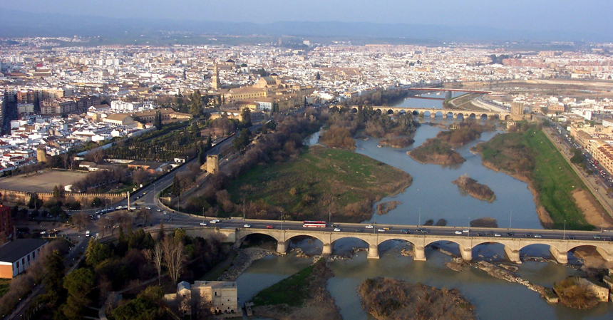

El centro histórico de Córdoba es uno de los cascos antiguos más grandes de Europa. En 1984, la Unesco declaró a la Mezquita de Córdoba como Patrimonio de la Humanidad. Más tarde, en 1994, la Unesco expandió ésta denominación a gran parte del casco antiguo. El centro histórico posee una gran riqueza monumental conservando grandes vestigios de la época romana, árabe y cristiana.
Los elementos de borde que definen la delimitación del conjunto histórico de Córdoba están formados por las vías de comunicación que coinciden con la antigua muralla, lo que en gran medida ha salvaguardado el centro histórico de los ensanches urbanísticos de finales del siglo XIX y principios del XX, pues éstos transcurren por el perímetro del mismo (Avenida Conde Vallellano, Paseo de la Victoria, Ronda de los Tejares, Avenida de las Ollerías), creándose así un anillo de espacios libres que protege al Conjunto Histórico de Córdoba.
Estructura
Desde el punto de vista de su estructura urbana, cabe decir que el casco histórico de Córdoba está constituido por dos partes físicamente diferenciadas, que son la Villa o antigua Medina musulmana, al oeste, y la Axerquía o barrio oriental. Esta división es herencia musulmana que se va a perpetuar con el paso de los siglos. Durante el período bajomedieval se dotará de mayor impulso a la zona de la Axerquía, poco poblada en el momento de la conquista cristiana, procediéndose a su ordenamiento en siete parroquias o collaciones. En el siglo XVI se abren plazas o se ensanchan algunas existentes, pero la estructura urbana no conoce transformaciones profundas, como tampoco se van a conocer en los siglos XVII y XVIII. Ya en el siglo XIX se producen actuaciones urbanísticas drásticas, como la demolición de las puertas y la mayor parte de la muralla, la creación de paseos y avenidas y la apertura de nuevas vías, que se completan a principios del siglo XX hasta configurar definitivamente el cinturón de rondas que rodea al casco histórico.
Por lo que respecta a la Villa, dentro de ésta se encuentran los restos de la ciudad romana al norte, la Medina andalusí al sur, con la Gran Mezquita Aljama, actual Catedral, y en el extremo suroccidental un barrio de expansión cristiana del siglo XIV surgido al amparo del Alcázar de los Reyes Cristianos. La heterogeneidad de toda esta zona permite dividir la Villa en tres partes: el centro comercial, el entorno de la Mezquita-Catedral y el barrio de San Basilio. Por su parte, en el caso de la Axerquía, la división es mucho más difícil dada su mayor homogeneidad, pese a lo cual se puede llevar a cabo una zonificación basada en la primitiva división en siete parroquias o collaciones. En la Axerquía se conservan la mayor parte de los templos cristianos bajomedievales, tanto las parroquias -de la que sólo una ha desaparecido- como las fundaciones conventuales.
En la trama urbana, las estrechas e irregulares calles determinan unas manzanas irregulares de herencia medieval, dentro de las cuales se ajusta un parcelario cuyo tamaño depende de la tipología que alberga, resultando amplio en el caso de conventos, residencias palaciegas o edificios institucionales y menor en viviendas, las cuales suelen responder a una tipología heredada de la casa musulmana, deudora a su vez de la romana de casa patio y cuya imagen más pintoresca son sus patios.
 Arriba
Arriba